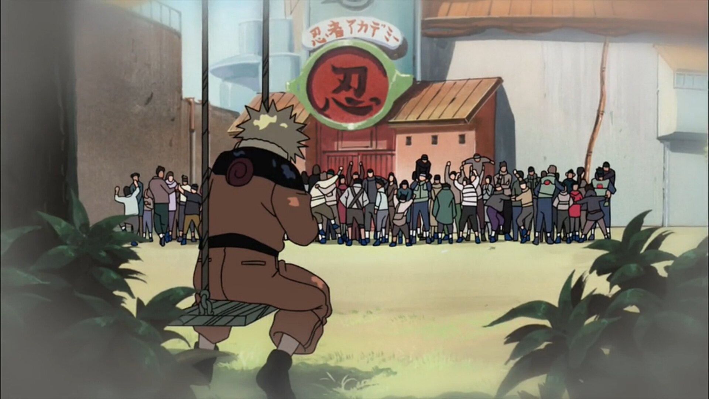

Ending
Эндинг — его закрывающая тема. За столь длинное время они приобрели свои отличительные черты, которые любой человек может отличить от заставок мультфильмов и сериалов.

Your browser does not support the audio element.